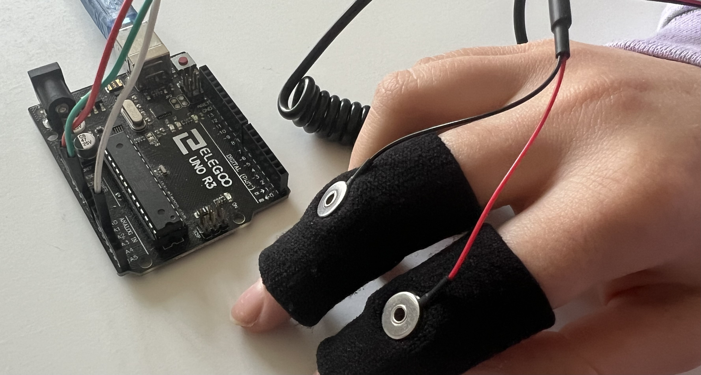

Stress Detector - Project Report
This is a Leaving Cert project focused on using technology to help improve the well-being of the user. I have made a project that tracks the users stress levels. I did this by using galvanic skin response sensors.
References
- Uno R3: Learning about my arduino model.
- Liquid Crystal: Used when learning to use C++
- More LiquidCrystal
- Matplot Information
- Data From Arduino to Python: did not work well for me.
Used to transfer info from c++ to python:
Information for sensors:
- Arduino Libraries
- Arduino Serial Library
- Serial.println(): Learning about .printlc()
Warning Sound:
Word Count
| Section | Words |
|---|---|
| Brief | 45 + Video |
| Investigation | 370 |
| Plan and Design | 260 + Flowchart |
| Create | 847 |
| Evaluation | 630 |
| Total | 2152 |